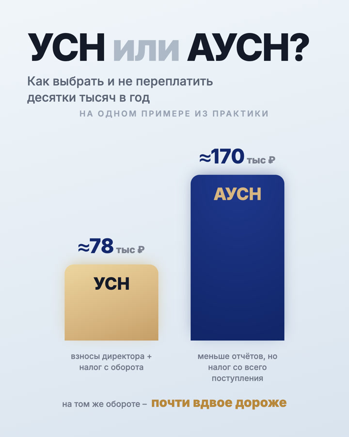

Бухгалтерские услуги · полный комплект контента
Как превратить сложные налоговые темы в понятный месяц контента
Для действующего аккаунта собрали систему из актуальных поводов, практических разборов, мифов и мягких предложений. Пользователь получает ответ на вопрос — и только потом видит следующий шаг.
Подготовлены 10 публикаций, 10 историй и подарочная карусель. Комплект доработан и отправлен клиенту.

Маркетинговая задача
Не знакомить заново, а вернуть аккаунту полезную регулярность
Профиль уже действовал. Поэтому мы не тратили месяц на формальное «о компании», а сразу включили темы, которые помогают предпринимателю ориентироваться и видеть компетентность команды.
Что нужно было решить
- оживить действующий аккаунт;
- говорить о сложном простым языком;
- показывать экспертизу без перегруза;
- снимать страхи вокруг бухгалтерии;
- мягко вести к аудиту или консультации.
Как устроили путь
Сначала даём повод остановиться: изменение, срок или знакомая проблема. Затем объясняем, что делать. Разборы мифов снижают недоверие, а предложения появляются только после пользы.
Логика: заметить → понять → сохранить → доверять → обратиться.
Актуальное
Изменения и календарь, которые дают причину открыть публикацию сейчас.
Практика
Выбор режима, первый сотрудник и ответ на требование — в понятных шагах.
Мифы
Снимаем опасения о законной оптимизации и роли бухгалтера.
Предложение
Экспресс-аудит и сопровождение как естественный следующий шаг.
Продукт, а не декор
Карусели дают человеку готовый алгоритм
Длинный материал не прячется в подписи. Один слайд — одна мысль, в конце — сохранение или понятное действие.
Первый сотрудник
Шесть шагов оформления превращены в последовательную памятку.
Требование из налоговой
Карусель снижает тревогу и раскладывает ответ на шесть действий.
ИП или ООО
Подарочный гид помогает пройти восемь вопросов до выбора формы.
Весь продукт внутри
Переключайте вкладки и смотрите материалы без обрезки
Показываем все 39 макетов версии, отправленной на согласование: ленту, карусели и две серии историй.
10 тем · 4 роли
Месяц собран как маршрут, а не случайный список
Темы актуального спроса чередуются с пользой, мифами и предложениями, чтобы лента не превращалась ни в справочник, ни в сплошную рекламу.
- Изменение налогового порогаАктуальное · привлечь внимание
- Обязательные взносы директораАктуальное · объяснить изменение
- Как выбрать налоговый режимПрактика · помочь сравнить
- Оптимизация — это серые схемы?Миф · снять опасение
- Экспресс-аудит бизнесаПредложение · лёгкий первый шаг
- Первый сотрудник: 6 шаговПрактика · карусель для сохранения
- Маленькому бизнесу бухгалтер не нужен?Миф · мягкий прогрев
- Календарь отчётности и платежейАктуальное · забота о сроках
- Требование из налоговой: 6 шаговПрактика · снять панику
- Бухгалтерия под ключПредложение · перейти к диалогу
8 статичных + 2 обложки каруселей
Единая лента без ощущения шаблона
Тёмные и светлые композиции чередуются, но синяя, золотая и молочная палитра удерживает общий образ. Нажмите на любой макет.
21 слайд без скрытых частей
Две основные карусели и один подарок
Листайте стрелками; нажмите на большой слайд, чтобы открыть его полностью.
Публикация 06 · 7 слайдов
Первый сотрудник: 6 шагов
1 / 7
Публикация 09 · 7 слайдов
Требование из налоговой: 6 шагов
1 / 7
Подарок · 7 слайдов
ИП или ООО: 8 вопросов перед выбором
1 / 7
2 мини-прогрева · 10 экранов
Истории подводят к проблеме и следующему материалу
Первая серия ведёт к экспресс-аудиту, вторая помогает убрать панику перед требованием и перейти к подробной карусели.
Серия 01 · 5 кадров
Сколько бизнес теряет незаметно
Скрытая проблема → причины → экспертность → приглашение на аудит.
1 / 5
Серия 02 · 5 кадров
Пришло требование из налоговой
Тревога → нормализация → ошибки → опыт → переход к шести шагам.
1 / 5
Финальная подготовка
Макеты доработали перед передачей клиенту
Команда проверила композицию, интервалы, выравнивание, фоны и образы. После этого экспорт передали клиенту.
Что сделали
- 10 публикаций и 10 историй;
- две основные и одна подарочная карусель;
- контент-план для трёх площадок;
- финальная доработка;
- экспорт и передача клиенту;
- положительная реакция на цветовую систему.
Этап проекта
Комплект передан клиенту на согласование. Запуск публикаций и коммерческие показатели не измерялись.
Налоговые темы, сроки и предложения на макетах относятся к коммуникации клиентского проекта. Кейс не является налоговой или юридической консультацией lemonmedia.
У вас сложная экспертная услуга?
Превратим её в понятный месяц контента
10 постов с маркетинговым планом, текстами и дизайном — от 4 990 ₽.